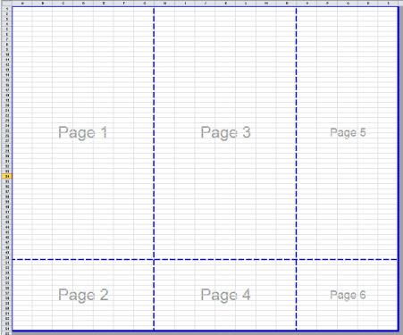
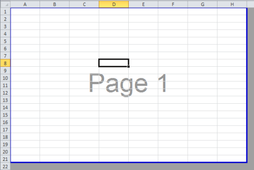
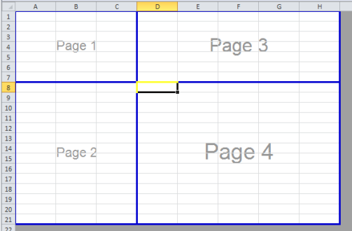

Sauts de page
Vous avez remarqué sur la capture d'écran précédente que l'on retrouvait une ligne bleue autour des pages à imprimer : il s'agit des sauts de page qui découpent "physiquement" votre feuille de calcul et défini à quel endroit une nouvelle feuille de papier commence.
Si vous ne définissez pas de zones d'impression, les feuilles de calcul sont fractionnées automatiquement.
Ci-dessous l'exemple d'une feuille fractionnée automatiquement. Nous retrouvons 6 pages créées automatiquement.

Diminuer le nombre de pages
Vous pouvez choisir de déplacer les limites des pages, il suffit pour cela de placer votre curseur au-dessus de la ligne bleue que vous souhaitez modifier, puis de la déplacer.
Si vous superposez deux lignes, elles fusionneront et vous pourrez ainsi, à votre guise, diminuer le nombre de page à imprimer.
Augmenter le nombre de pages
A l'inverse, vous pouvez souhaitez augmenter le nombre de pages à imprimer, pour cela vous devez insérer un saut de page, cela rajoutera des lignes de sauts de page que vous pourrez ensuite modifier.
Pour insérer un saut de page, il faut placer votre curseur dans une cellule qui servira de limite.
Exemple :

Nous pouvons remarquer que j'ai sélectionné la cellule D8.
En ajoutant un saut de page, Excel va couper la page 1 en rajoutant des "lignes bleues" à gauche et au-dessus de la cellule sélectionnée

Ma feuille qui était constituée de 1 page en contient maintenant 4. Je peux à nouveau déplacer les lignes pour correspondre à mon contenu.
Complément :
Si je souhaite ajouter qu'une ligne horizontale, je sélectionnerai une cellule se trouvant dans la première colonne avant d'ajouter mon saut de page.